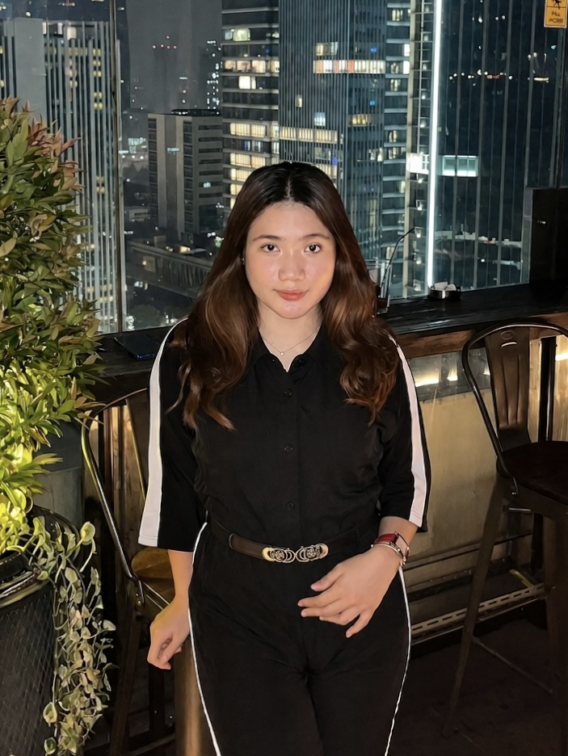

Education.
2024 - Now
Universitas Pembangunan Nasional Veteran Jakarta
Undergraduate D3
Information Systems

Information Systems Student
Fifth-semester Information Systems student at Universitas Pembangunan Nasional Veteran Jakarta with a strong interest in Web Development. Possess fundamental knowledge of HTML, CSS, JavaScript, and database management gained through academic projects. Strong analytical and problem-solving skills with the ability to learn new technologies quickly. Eager to contribute, grow professionally, and develop innovative web-based solutions.
View My Projects
2024 - Now
Undergraduate D3
Information Systems
Swipe or scroll horizontally to see my project.
A web application designed to showcase traditional Indonesian food recipes. Features include dynamic filtering (by category and difficulty), pagination, an accordion interface for recipe steps, and an interactive form to add new recipes.
A web-based platform (Harmony Studio) designed to streamline music studio reservations. It features dedicated portals for both Users and Admins. Users can browse available rooms, submit booking requests, manage their dashboard, and complete payments. The Admin portal allows for efficient room management, reservation tracking, and revenue monitoring.
A mobile application for streaming and playing music. It features a modern dark-mode user interface, a dynamic "now playing" banner, interactive play controls, and intuitive bottom navigation for exploring songs.
Is a mobile digital book catalog application powered by the Open Library API, designed to help users discover, search, and save their favorite books. The application features book search functionality by title or author, detailed book information, trending book recommendations, and a favorites system for managing personal reading collections. Built with a modern and user-friendly interface, BookShelf provides an engaging and seamless experience for exploring digital book resources and enhancing reading accessibility.
EcoSort is a UI/UX mobile application design that helps users sort waste correctly into categories such as paper, plastic, glass, metal, and organic waste. The application provides waste-sorting guidelines, a daily recycling activity tracker with a streak-based reward system, information about nearby waste banks, and a user profile feature to monitor individual environmental contributions. EcoSort is designed to promote environmental awareness, encourage responsible waste management practices, and support a more sustainable lifestyle.
Is a mobile authentication application built with React Native (Expo) and Firebase. The app implements secure user authentication and authorization features, including user registration, login, email verification, password reset, biometric authentication, protected routes, and role-based access control. It demonstrates modern mobile security practices and user access management in a real-world application environment.
Is a mobile application designed to manage user authentication through a simple and intuitive interface. The application includes user registration, login, profile management, and logout features. Users can create a new account, sign in using their email and password, view their profile information, and update their profile picture. The interface is designed to provide a seamless, user-friendly, and efficient authentication experience while demonstrating fundamental mobile application development concepts.
Is a web-based application developed for students of the Faculty of Computer Science at UPN Veteran Jakarta to manage and document academic references digitally. The system provides features for submitting reference data, including books, research papers, and community service journals, along with semester-based validation, PDF report generation, and student profile management. Designed with a structured and user-friendly interface, the application streamlines the process of collecting, organizing, and maintaining academic references in a more efficient and accessible way.
Made with ♥ by Chalieta Gabriella Tangkau | 2026